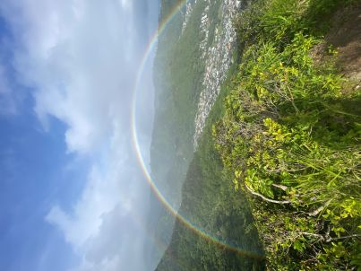
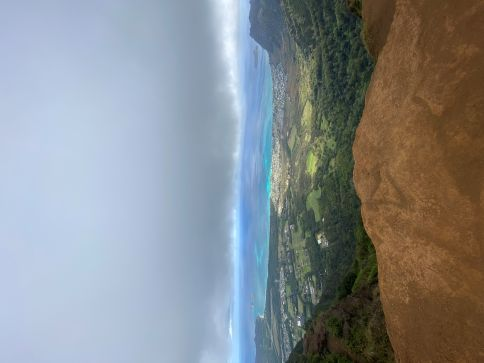

Introduction
Due to my birthplace being Honolulu, Hawaii and being surrounded with lush green mountains, I've always loved going out for a hike either by myself or with some friends. Some of my favorite local hikes include Manoa Falls, Wa'ahila Ridge, and 'Kuli'ou'ou Ridge
The Hiking Experience
Below I've included some of my favorite hikes along with their locations on google maps and some photos I took myself!
Manoa Falls
- Unfortunately I don't have a photo for this trail
Wa'ahila Ridge

Kuli'ou'ou Ridge
